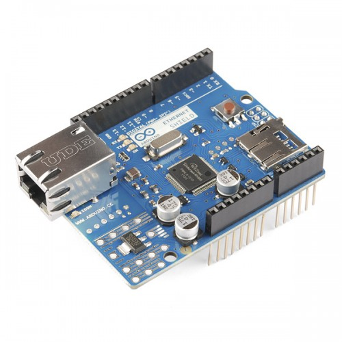
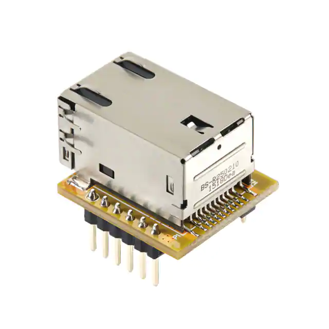

Ethernet Boards¶
DCC-EX supports both wired and wireless network connections. We will discuss using a wired Ethernet connection here. To connect using a WiFi board, see the Wifi Boards Section
To use Ethernet instead of WiFi, follow these simple steps:
Stick your Ethernet shield onto the stack with your Mega and Motor Shield
Open your config.h file in your editor (like the Arduino IDE)
Uncomment the line
"#define ENABLE_ETHERNET = true"by removing the “//” charactersAdd “//” comment lines in front of
"#defind ENABLE_WIFI = true"(if it isn’t already commented out).Enter the SSID for your router by replacing “Your network name” with the name of your network in
#define WIFI_SSID "Your network name"in between the quotes.Enter the Password for your router by replacing “Your Network Passws” with your password in the line:
#define WIFI_PASSWORD "Your network passwd"in between the quotes.
Arduino Network Shield 2¶
There have been different revisions for the Arduino Network Shields, the main difference is the version of the WiFi chip on the board. The “2” board uses the Wiznet W5500, other versions used the older W5100 chip. The only supported chip currently is the W5500, but the other boards may work as well. The W5500 can handle 8 simultaneous socket connections while the W5100 can handle 4. These boards provide a network (IP) stack capable of both TCP and UDP. This board also has an SDCard which can be used for your own custom features or for storing settings with a possible future version of DCC++ EX
{kind=link}
Wiznet WIZ850IO¶
This is a micro Ethernet board no bigger than the RJ45 connector it is attached to. You have to wire this with jumpers or solder it to a prototyping PCB.
{kind=link}
{kind=link}
{kind=link}